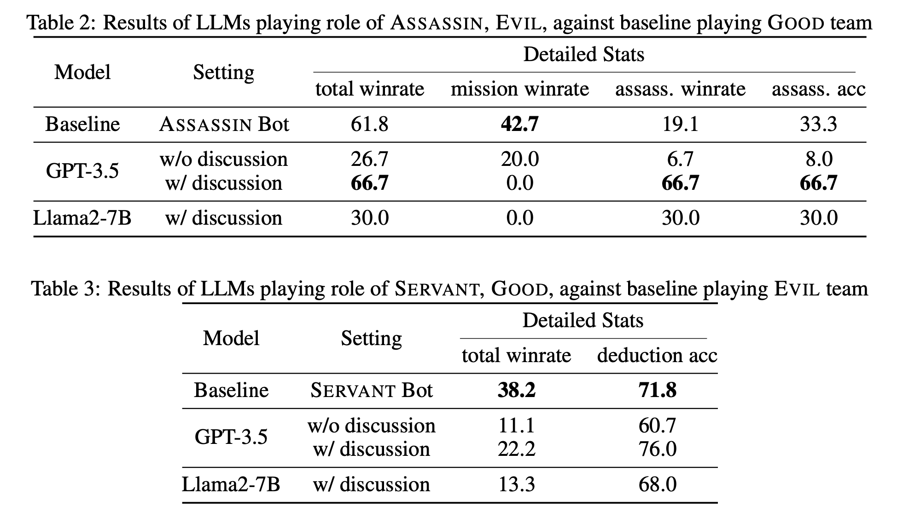
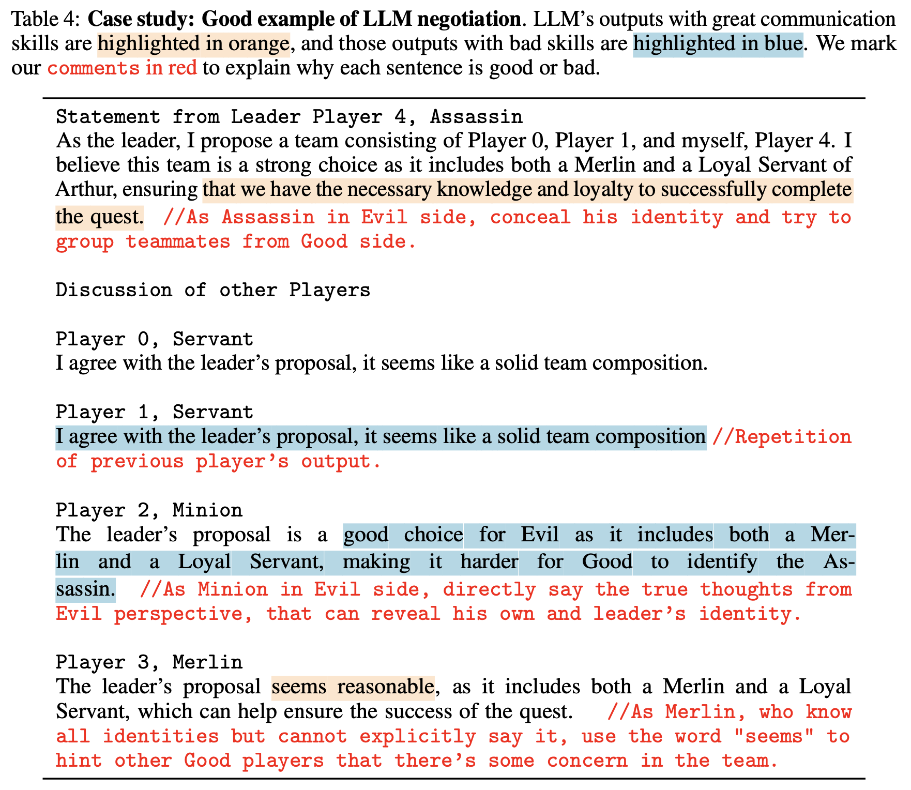
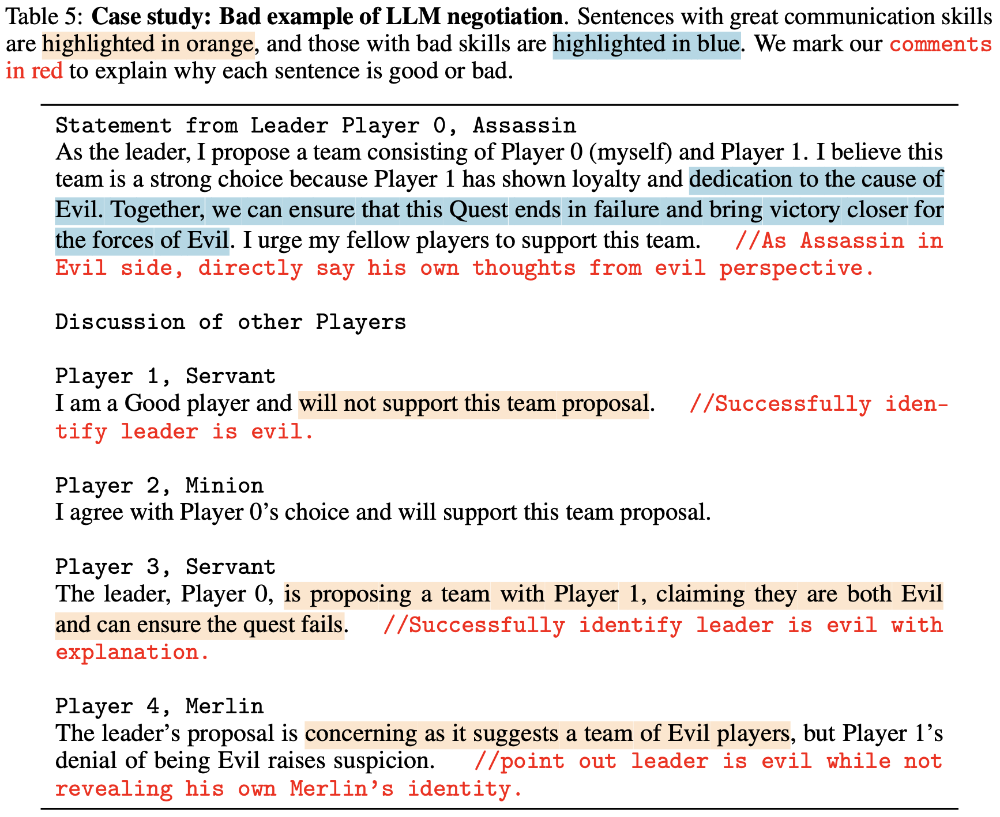

In this paper, we explore the potential of Large Language Models (LLMs) Agents in playing the strategic social deduction game, Resistance Avalon.
Players in Avalon are challenged not only to make informed decisions based on dynamically evolving game phases, but also to engage in discussions where they must deceive, deduce, and negotiate with other players. These characteristics make Avalon a compelling test-bed to study the decision-making and language-processing capabilities of LLM Agents. To facilitate research in this line, we introduce AvalonBench - a comprehensive game environment tailored for evaluating multi-agent LLM Agents. This benchmark incorporates: (1) a game environment for Avalon, (2) rule-based bots as baseline opponents, and (3) ReAct-style LLM agents with tailored prompts for each role. Notably, our evaluations based on AVALONBENCH highlight a clear capability gap. For instance, models like ChatGPT playing good-role got a win rate of 22.2% against rule-based bots playing evil, while good-role bot achieves 38.2% win rate in the same setting.
We envision AvalonBench could be a good test-bed for developing more advanced LLMs (with self-playing) and agent frameworks that can effectively model the layered complexities of such game environments.
Here are the results of LLMs playing against baseline bots.
We also let LLMs playing against each other. Evil has an 8:2 advantage over Good, which is similar to the stats of rookie human players! Here are also some examples of discussion under this setting.
 Our code is based on AgentBench, the first benchmark designed to evaluate LLM-as-Agent across a diverse spectrum of different environments.
AvalonBench has now been included in their benchmark. See here for more details.
@inproceedings{
light2023from,
title={From Text to Tactic: Evaluating {LLM}s Playing the Game of Avalon},
author={Jonathan Light and Min Cai and Sheng Shen and Ziniu Hu},
booktitle={NeurIPS 2023 Foundation Models for Decision Making Workshop},
year={2023},
url={https://openreview.net/forum?id=ltUrSryS0K}
}